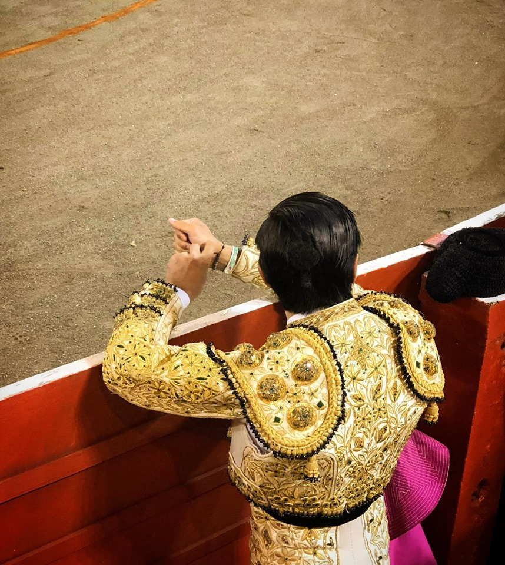

3 Razones por las Cuales Visitar Manizales
| 1 | 2 | 3 |
|---|---|---|
| Por que hay una inmensa riqueza musical con las diversas agrupaciones que tiene la ciudad, sus conciertos y en especial por las Retretas Dominicales del Parque Ernesto Gutiérrez Arango a cargo de la Banda Municipal de Manizales, una de las mejores bandas sinfónicas del país | Por la Feria de Manizales, considerada la mejor Feria de America. | Por su riqueza cultural, su patrimonio arquitectónico, su centro histórico, sus iglesias, sus dos basílicas, sus ecoparques y su riqueza gastronómica |
QUÉ HACER EN MANIZALES
Nevado del Ruiz

Monumento a los Colonizadores
Recinto del Pensamiento
Parroquia de Chipre
Catedral Basílica de Manizales
Atardecer en Manizales
Ecoparque los Yarumos
Ecoparque los Alcázarez
Torre de Herveo
Torre de Chipre
LA MEJOR FERIA DE AMÉRICA
Concierto
Concierto de la Feria: El Cantinazo Mix: Paola Jara, Alzate, Jessi Uribe, Yeison Jiménez, Francy, Dareska, Charrito Negro, Darío Gómez, Jhon Alex Castaño, Arelis Henao, Mr. Sax, Greecy Rendón, Mike Bahía, DJ. Blader
Feria Taurina
La feria taurina tiene también su protagonismo, con un cartel que presenta a los mejores rejoneadores de renombre internacional.
Desfiles
Los diferentes desfiles se abren paso por las calles principales de Manizales. Las reinas participan disfrazadas de manolas en carruajes y otro día van vestidas con los trajes típicos de cada uno de sus países en el Desfile de las Naciones
TESTIMONIOS DE VISITANTE
| Testimonio 1 | Testimonio 2 | Testimonio 3 | Testimonio 4 | Testimonio 5 |
|---|---|---|---|---|
 Mi nombre es Yuly rojas me pareció una ciudad muy amable, organizada y aseada. Me encantó. |
Me llamo David. Realmente es mi primera vez en la ciudad y me han acogido como un ciudadano mas. |
 Yo soy Juan y pienso que hay una gran variedad de sitios turisticos a los que visitar. Excelente ciudad. |
Mi nombre es Luis y me parece que la cordialidad de las personas no la tiene otro lugar de este mundo. |
 Me llamo Yenny, estoy aqui por la Feria de Manizales, considerada la mejor Feria de America. |
Suscribase a nuestras noticias
Registrarse: